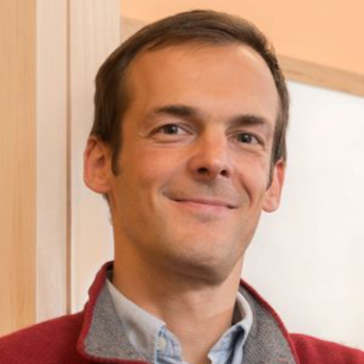
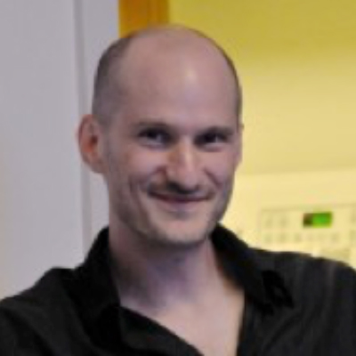
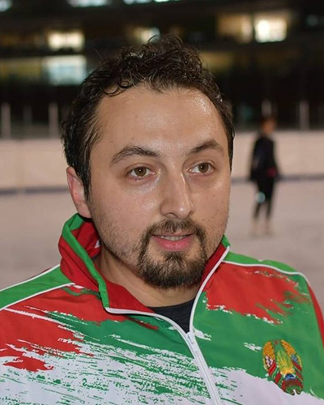
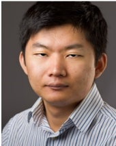
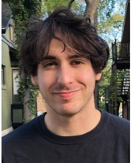
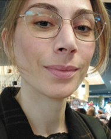
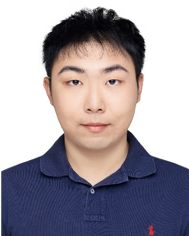

Our Team
Project and Core Directors
Dr. Dora E. Angelaki, PhD
Professor of Neural Science and Mechanical and Aerospace Engineering
New York University
Roles: Director of Project C
Website
Dr. Gregory C. DeAngelis, PhD
George Eastman Professor of Brain and Cognitive Sciences, Neuroscience, and Biomedical Engineering
University of Rochester
Roles: Overall Project Lead, Director of Administrative Core, Director of Project B
Website

Dr. Jan Drugowitsch, PhD
Assistant Professor of Neurobiology
Harvard Medical School
Roles: Director of Data Science Core, co-Director of Project A
Website
Lab Website
Dr. Ralf Haefner, PhD
Assistant Professor of Brain and Cognitive Sciences
University of Rochester
Roles: Director of Project A, co-Director of Data Science Core
Website
Lab Website
Collaborators

Dr. Gregory Horwitz
Associate Professor of Physiology and Biophysics
University of Washington
Roles: Collaborator on Projects B and C
Website
Lab Website
Dr. Xaq Pitkow
Assistant Professor of Electrical and Computer Engineering, Rice University
Assistant Professor of Neuroscience, Baylor College of Medicine
Roles: Collaborator on Projects A and C
Website
Lab Website
Postdoctoral Fellows
Akiyuki Anzai
Project B
University of Rochester
Edoardo Balzani
Project C
New York University
Johannes Bill
Projects A,C
Harvard University
Gabor Lengyel
Projects A, B
University of Rochester

Vitaly Lerner
Project B
University of Rochester
Brooks Musangu
Data Science Core
Harvard University
Jean-Paul Noel
Project C
New York University

Alexandr Pak
Project C
New York University
Boris Penaloza
Projects A,B
University of Rochester

John Vastola
Projects A,C
Harvard University

Valentina Vencato
Project C
New York University
Graduate Students
Lokesh Boominathan
Project A
Rice University
Yizhou Chen
Project A
Rice University
Zach Cohen
Project A
Harvard University

Yelin Dong
Project B
University of Rochester
Annette French
Project B
University of Rochester
Sabya Shivkumar
Project A, B
University of Rochester

Zhexin Xu
Project B
University of Rochester